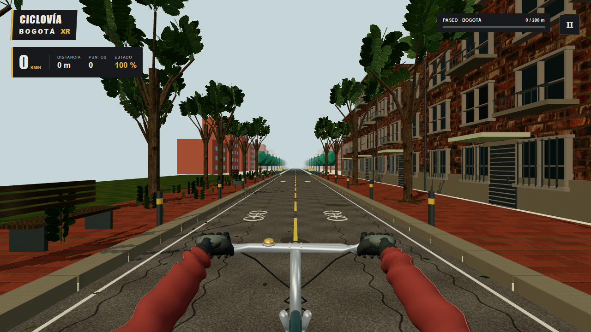
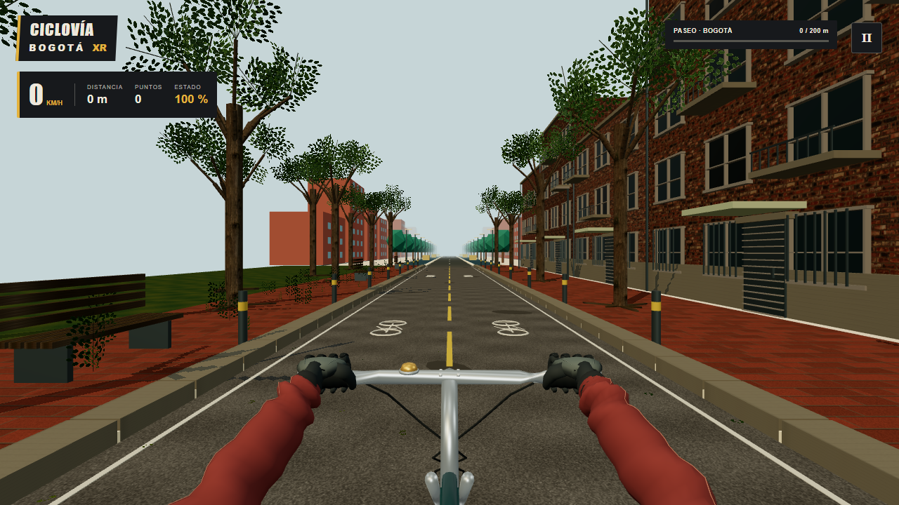
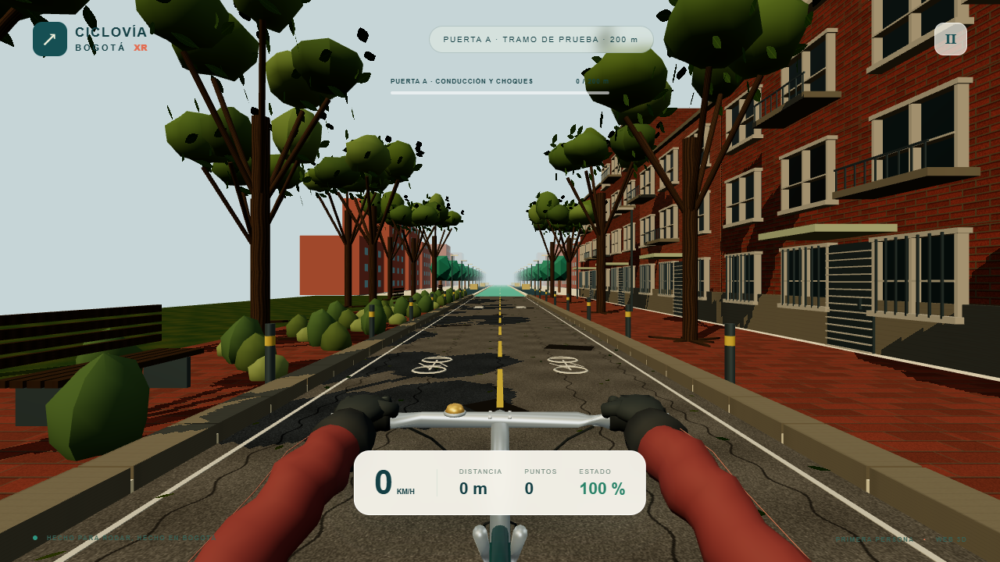

CICLOVÍA BOGOTÁ XR · PUERTA A · ALPHA.3
Cuarenta metros para definir el acabado.
Comparación del juego integrado: primera persona, árbol y fachada de referencia, materiales, transición e interfaz. La puerta A continúa en revisión y la prueba en teléfono físico sigue pendiente.
Jugar el tramo de 200 m · Revisión anterior
Avance del 23 al 26 de octubre
La misma cámara y 1280×720 píxeles internos: hojas pequeñas agrupadas, ladrillos a escala y asfalto sin grietas repetidas. El cambio de orden de dibujo conserva la geometría y evita sombrear parte de las superficies ocultas.




Antes y después, con la misma cámara
Resolución interna igual a la indicada, ratio 1 y FOV 65°. Cámara del mundo en (0, 1,65, 1,3), sin giro ni inclinación, bicicleta detenida en el inicio. Son capturas reales. El tamaño que ves aquí se adapta a tu pantalla; no cambia la resolución del archivo. El modelo de primera persona ahora se adapta proporcionalmente al formato vertical.


Conducción y llegada
Calidad visual y rendimiento se evalúan por separado. La resolución adaptativa conserva como mínimo el 75 % de cada dimensión CSS: 309×629 para un área de 412×839. Recupera definición gradualmente cuando hay margen sostenido. Las capturas de comparación usan ratio 1 fijo; no representan todos los perfiles automáticos.
La escena sigue siendo un prototipo estilizado, inspirado en Bogotá sin trazado geográfico certificado. Los actores mantienen su representación básica; esta iteración no entrega historia, peleas ni realidad aumentada.
También puedes revisar el perfil mínimo real: sol a 309×629 internos y lluvia a 309×629 internos. Mantiene vía, guantes y controles legibles; reduce follaje, reflejos y sombras. Las copas se ven más dispersas y los detalles finos pierden definición.


Ver mediciones y condiciones · Procedencia y licencias
Juega quieto y en un lugar seguro. Nunca mientras caminas, conduces o pedaleas realmente.